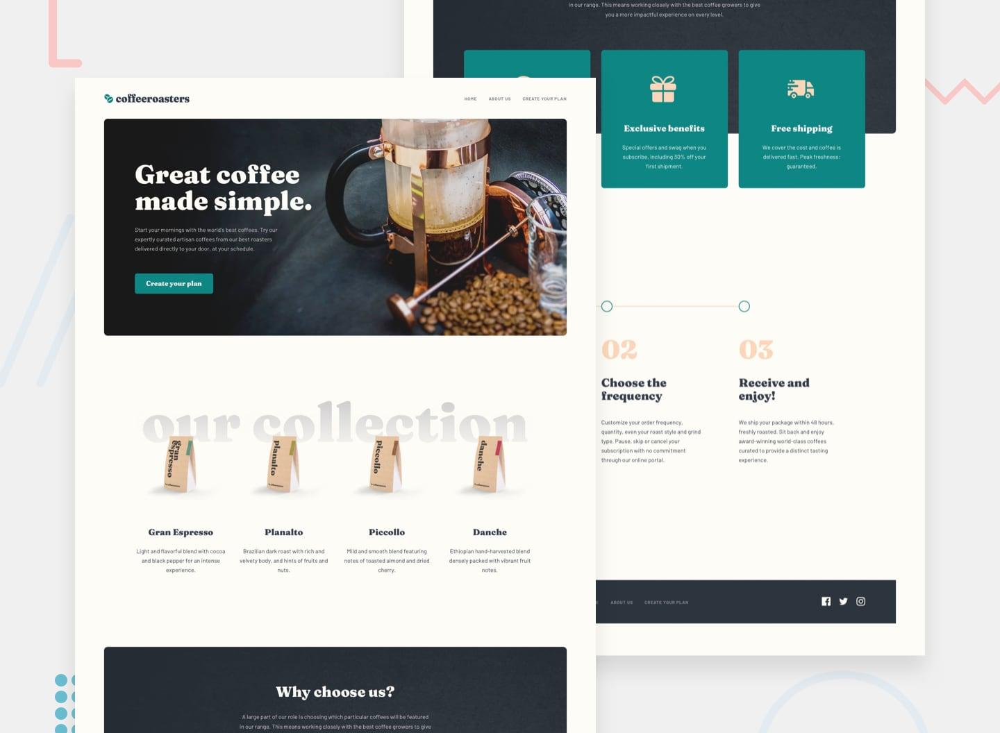

Frontend Mentor - Coffeeroasters subscription site

Design preview for the Coffeeroasters subscription site coding challenge
Welcome! 👋
Thanks for purchasing this premium Frontend Mentor coding challenge.
Frontend Mentor challenges allow you to improve your skills in a real-life workflow. These premium challenges are perfect portfolio pieces, so please do feel free to use what you build in your portfolio to show others.
To do this challenge, you need a good understanding of HTML, CSS, and JavaScript.
The challenge
Your challenge is to build out this multi-page coffee subscription website and get it looking as close to the design as possible.
You can use any tools you like to help you complete the challenge. So if you’ve got something you’d like to practice, feel free to give it a go.
Your users should be able to:
View the optimal layout for each page depending on their device’s screen size
See hover states for all interactive elements throughout the site
Make selections to create a coffee subscription and see an order summary modal of their choices (details provided below)
Expected bahaviour
The interactive subscription page has a number of specific behaviours, which are listed below:
If “Capsule” is selected for the first option
The “Want us to grind them?” section should be disabled and not able to be opened
Order summary texts updates
If “Capsule” is selected, update the order summary text to:
“I drink my coffee using Capsules”
Remove the grind selection text
If “Filter” or “Espresso” are selected, update the order summary text to:
“I drink my coffee as Filter||Espresso”
Keep/Add the grind selection text
For all other selections, add the selection title in the blank space where appropriate
Updating per shipment price (shown in “How often should we deliver?” section at the bottom) based on weight selected
If 250g weight is selected
Every Week price per shipment is $7.20
Every 2 Weeks price per shipment is $9.60
Every Month price per shipment is $12.00
If 500g weight is selected
Every Week price per shipment is $13.00
Every 2 Weeks price per shipment is $17.50
Every Month price per shipment is $22.00
If 1000g weight is selected
Every Week price per shipment is $22.00
Every 2 Weeks price per shipment is $32.00
Every Month price per shipment is $42.00
Calculating per month cost for the Order Summary modal
If Every Week is selected, the Order Summary modal should show the per shipment price multiplied by 4. For example, if 250g weight is selected, the price would be $28.80/month
If Every 2 Weeks is selected, the Order Summary modal should show the per shipment price multiplied by 2. For example, if 250g weight is selected, the price would be $19.20/month
If Every Month is selected, the Order Summary modal should show the per shipment price multiplied by 1. For example, if 250g weight is selected, the price would be $12.00/month
The designs show these differences, so you can refer to them to get an idea of what’s needed for the different states.
Want some support on the challenge? Join our Slack community and ask questions in the #help channel.
Where to find everything
Your task is to build out the project to the Sketch design file provided. You can download the design file on the platform. It comes with a README.md file as well to help you get set up on Sketch or other popular design tools like Figma and Adobe XD.
All the required assets for this project are in the /assets folder. The assets are already exported for the correct screen size and optimized. Some images can be re-used at multiple screen sizes. So if you don’t see an image in a specific folder, it will typically be in another folder for that page.
The design system in the design file will give you more information about the various colors, fonts, and styles used in this project.
Building your project
Feel free to use any workflow that you feel comfortable with. Below is a suggested process, but do not feel like you need to follow these steps:
Separate the starter-code from the rest of this project and rename it to something meaningful for you. Initialize the codebase as a public repository on GitHub. This will make it easier to share your code with the community if you need some help. If you’re not sure how to do this, have a read through of this Try Git resource. IMPORTANT: There are already a couple of .gitignore files in this project. Please do not remove them or change the content of the files. This is to avoid the accidental upload of the Sketch file to GitHub. With these premium challenges, please be sure not to share the Sketch file in your GitHub repo. Thanks!
Configure your repository to publish your code to a URL. This will also be useful if you need some help during a challenge as you can share the URL for your project with your repo URL. There are a number of ways to do this, but we recommend using Vercel. We’ve got more information about deploying your project with Vercel below.
Look through the designs to start planning out how you’ll tackle the project. This step is crucial to help you think ahead for CSS classes that you could create to make reusable styles.
Before adding any styles, structure your content with HTML. Writing your HTML first can help focus your attention on creating well-structured content.
Write out the base styles for your project, including general content styles, such as font-family and font-size.
Start adding styles to the top of the page and work down. Only move on to the next section once you’re happy you’ve completed the area you’re working on.
Deploying your project
As mentioned above, there are a number of ways to host your project for free. We recommend using Vercel as it’s an amazing service and extremely simple to get set up with. If you’d like to use Vercel, here are some steps to follow to get started:
Sign up to Vercel and go through the onboarding flow, ensuring your GitHub account is connected by using their Vercel for GitHub integration.
Connect your project to Vercel from the “Import project” page, using the “From Git Repository” button and selecting the project you want to deploy.
Once connected, every time you git push, Vercel will create a new deployment and the deployment URL will be shown on your Dashboard. You will also receive an email for each deployment with the URL.
Sharing your solution
There are multiple places you can share your solution:
Submit it on the platform so that other users will see your solution on the site. Here’s our “Complete guide to submitting solutions” to help you do that. With these premium challenges please be sure not to upload the Sketch file to GitHub when you’re submitting to the platform and sharing it around.
Share your solution page in the #finished-projects channel of the Slack community.
Tweet @frontendmentor and mention @frontendmentor including the repo and live URLs in the tweet. We’d love to take a look at what you’ve built and help share it around.
Giving feedback
Feedback is always welcome, so if you have any to give on this challenge please email hi[at]frontendmentor[dot]io.